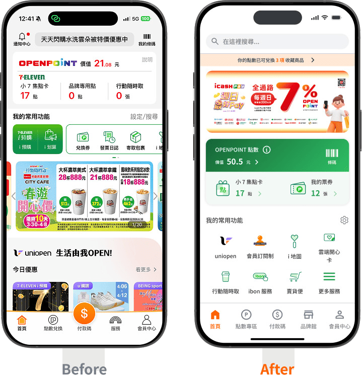
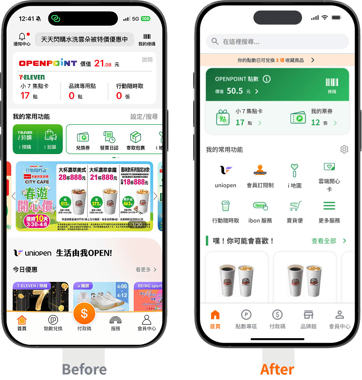
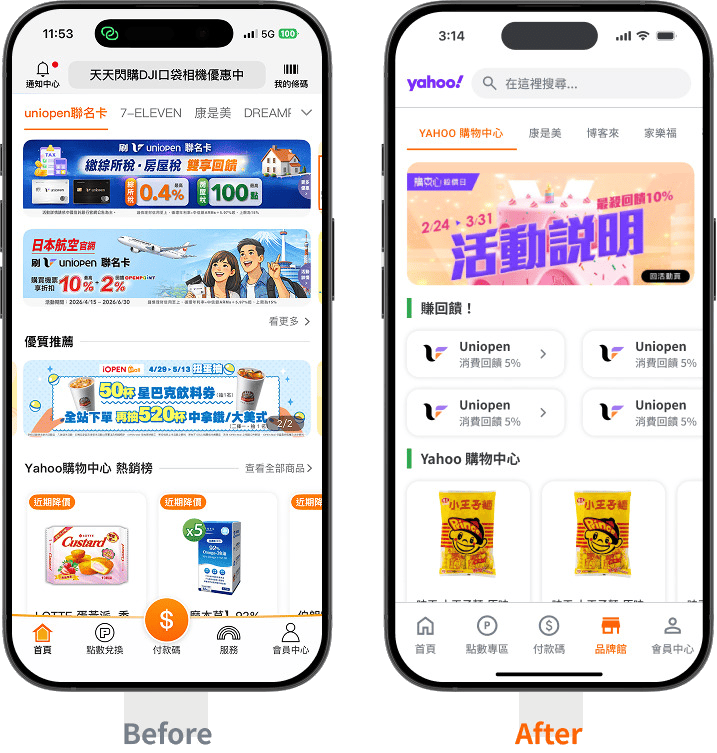
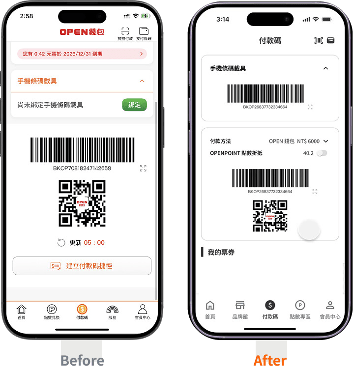
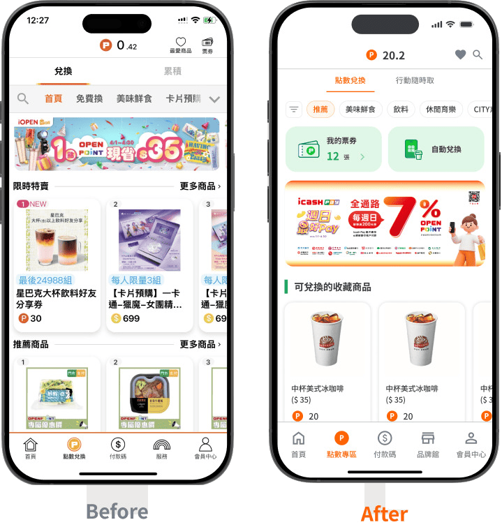
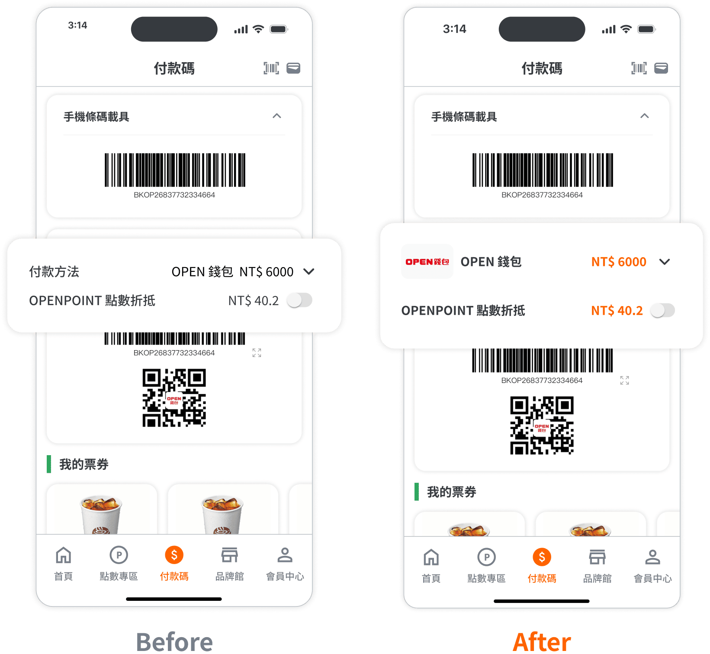
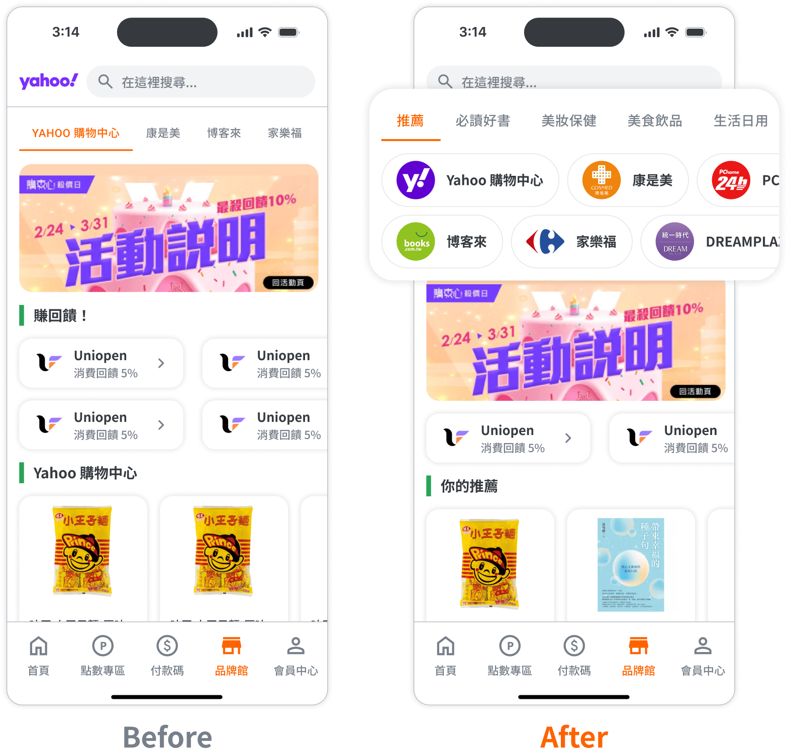
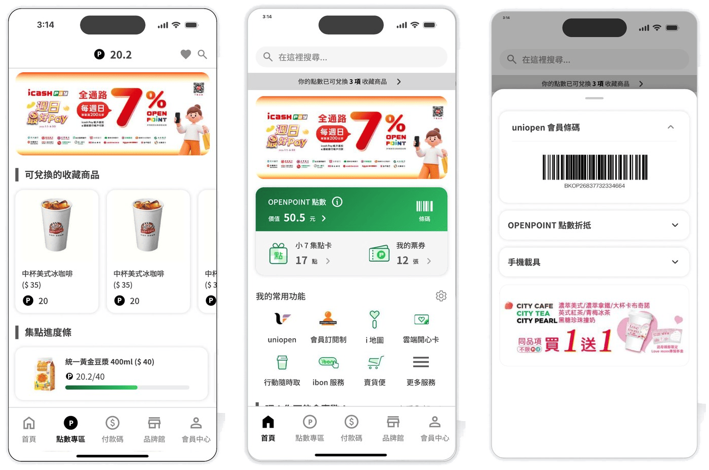

專案背景
OPENPOINT 是統一集團的會員生態系，目標是建立點數循環、帶動跨通路消費。我一開始接觸這個題目時，其實跟大多數使用者一樣，只覺得它「很難用」，但隨著我開始分析產品後才發現：為了串聯點數、票券、支付、電商與各 BU 的需求，越來越多功能被整合進同一個 App——功能持續擴張，卻不一定同步整合了使用體驗。這讓我和團隊開始好奇：使用者是否也感受到了同樣的便利？
我們從近一年的使用者負評中尋找答案，發現問題多集中在四個面向：充斥大量廣告、介面雜亂無章、功能難找、操作流程複雜難懂，以及找不到目標商品。換句話說，OPENPOINT 功能持續擴張，卻沒有同步整合體驗，反而增加了使用者完成任務的負擔——這也成了我們這次專案想解決的核心問題。
研究方法
為了多角度理解使用者與產品現況，我們透過三種方式蒐集資料：
研究洞察
整理問卷與訪談結果後，我發現使用者的困擾其實高度集中在三個環節：
1. 導覽與資訊架構混亂、廣告干擾操作
App 導覽混亂、資訊架構複雜、廣告干擾操作，且功能名詞定義重複或不好理解，使用者難以快速找到目標服務；品牌商品資訊又存在於首頁各區塊，與功能型資訊混合呈現，使用者無法完整接收品牌訊息。
一進 APP 就跳出廣告，首頁也是一堆商品廣告，想找的服務卻藏得很深，我的常用功能甚至不到一行，每次用都十分火大。
2. 商品探索與票券兌換體驗不佳
票券入口層級過深且分類複雜，使用者不清楚從哪裡購買與使用；推薦內容又偏熱門導向、缺乏個人化，降低了商品兌換或購買的意願。
首頁的資訊都不是我喜歡的，希望可以讓系統推薦我最常兌換的東西。
3. 支付流程動線不佳，與票券使用缺乏整合
App 內支付方式眾多，卻無法在點開前預覽各支付方式的餘額；系統會預設上一次的支付方式，如果要切換必須退出重新操作，動線不佳；也無法在結帳流程中直接兌換票券。
支付方式太多，每次都要切來切去，也沒辦法在外部看到每種支付方式還剩多少錢。
設計策略
基於這些洞察，我們把 How Might We 定為：
接著我們必須在「品牌曝光」與「使用體驗」之間找到平衡，訂出三個設計目標：
01 重整資訊架構，在提升曝光的同時降低干擾
在品牌曝光的前提下，重新建立清晰的資訊分層，區分「任務操作」與「行銷內容」，讓使用者快速找到功能，同時保留品牌曝光效益。
02 建立點數與票券使用邏輯，提升轉換與使用率
在促進點數使用的目標下，整合票券兌換、管理與使用流程，讓使用者清楚理解使用時機與入口，進而提升點數兌換率與票券使用率。
03 整合支付與優惠流程，優化結帳效率
在推動跨通路消費與支付使用的策略下，整合點數折抵、票券使用與付款流程，減少操作步驟與切換成本，提升結帳效率。
資訊架構重塑
原有的資訊架構階層過深、名詞模糊，同樣的功能會出現在不同頁面或點擊層，容易讓使用者混淆或增加記憶負擔。依據問卷與卡片分類結果，我把架構重整為五大分類，優先呈現高頻功能，並讓宣傳內容與任務操作分離：
因為「服務」頁使用率較低，我把相關功能整合至首頁「我的常用功能」，並重組導覽列，優先呈現高頻功能；同時把原本散落在首頁各區塊的品牌商品資訊，集中到獨立的「品牌館」呈現，避免干擾主要操作流程，也讓品牌方獲得更完整的瀏覽體驗。
設計亮點
以下是我實際動手設計、並在四個核心頁面上落地的改版重點，每一項都附上改版前後的介面對照。
首頁資訊層級重構
原本 Banner 位於頁面中段，容易打斷使用者的操作動線；調整後我把 Banner 置頂，讓宣傳資訊保留曝光，同時不干擾主要任務。我也把 OPENPOINT 點數、集點卡、票券與條碼集中於會員資訊區，讓使用者能在同一區塊查看與使用。

接著我把「我的常用功能」區域加大，讓使用者更容易點擊，同時把原本分散在服務 Tab 的功能整合進首頁；原本無差別曝光、容易被忽略的廣告，也改以個人化推薦呈現，提升使用者往下瀏覽的意願，也讓後續廣告曝光更有效。

建立品牌館專區
我把品牌資訊獨立成一個新的 Tab，與功能導向的內容分離，並在專區中整合商品、活動與品牌內容，提供更完整的瀏覽體驗，藉此提升品牌傳達效果與使用者的探索意願。

重構支付流程
我在付款碼頁面提供了支付方式的餘額預覽，讓使用者不用點進去也能先看到餘額；同時優化了切換機制，使用者可以直接在結帳頁面中選擇與調整付款方式，不必退出重新操作。

票券兌換體驗重整
我依據使用者過去的使用行為與收藏偏好，建立了個人化推薦機制，並統一兌換與購買入口，讓它們集中至相同頁面進入。同時把「我的票券」入口前移至首頁，降低使用者的尋找成本，讓使用者能更快進入票券使用流程。

設計迭代與可用性測試
設計完成後，我們招募了 4 位使用 OPENPOINT 超過 3 年、每週使用 3–5 次以上的高頻用戶，針對新版設計進行可用性測試，測試目標包括：探索使用者是否理解新版資訊架構與首頁主要功能、驗證使用者是否能順利完成「使用 OP 點數兌換票券」「使用現金結帳並掃描會員條碼」「使用兌換券兌換商品」「使用 OP 付款碼結帳並兌換商品」等高頻核心任務，以及評估新增「品牌館」的理解度與瀏覽意願。
付款碼結帳並兌換商品
測試結果顯示，使用者付款的流暢度提升了，但新版付款方式的切換操作不易被發現——原本的付款方式切換區塊辨識度不足。我後續透過強化資訊層級與視覺區隔，提升了它的可見性；此外，把商品兌換券整合至付款碼頁面後，使用者可以直接完成兌換，也提升了流程流暢度與曝光度。

品牌館瀏覽
測試發現，部分使用者並不理解「品牌館」的定位，以品牌分類的架構反而提高了找商品的成本。因此我把導覽方式改以商品分類呈現，幫助使用者更容易瀏覽與探索商品。

其他核心流程
其餘三項核心流程——使用點數兌換票券、使用票券兌換商品、出示會員條碼並完成點數折抵——測試結果都顯示流程有所改善，使用者能更快找到目標商品或入口，並順利完成任務。

心得與反思
-
如何賺錢，是一個產品最大的目標
在研究 OPENPOINT 以前，我一直覺得它很難用，也不太理解它的設計。但在資料研究與訪談 UX Manager 後，我才發現許多設計決策其實都與商業目標有關，而獲利始終是產品的重要目標。這也讓我重新思考設計師的角色：我們需要在商業目標與使用者體驗之間找到平衡，並不只是要傾聽使用者。這對仍是學生的我來說，是很大的一個收穫。
-
研究的深度，決定我們解決問題的層級
一開始完成問卷與訪談後，我們拿到了使用者大把的抱怨，於是很開心地嘗試解決它們。但在製作的過程中，我也發現那些許多表層的問題，甚至可能是路邊抓一個人問他也可以回答的，例如「功能太多」「資訊很亂」或「找不到入口」。我認為研究的價值在於挖掘現象背後的原因，經過這次經驗，我也發現自己還有許多成長空間，尤其是在定義問題的能力上——如何提出正確的問題，是我目前最想持續精進的方向。
-
AI 能夠快速生產介面，但仍難以理解使用情境與商業目標
我也嘗試以 AI（Claude Code）根據問卷與訪談結果快速生成介面原型，發現 Claude 整理出的 insights 與團隊的研究洞察大致一致，適合用來統整資料；但 AI 產出的設計往往只解決使用者提到的主要痛點，卻忽略了產品的核心商業目標（例如曝光），導致商業價值流失；同時也缺乏對統一生態系、使用方式的理解，產出的設計不完全符合 OPENPOINT 的服務邏輯，容易脫離真實情境。這讓我更確定：設計仍然需要人的判斷與脈絡理解來補足 AI 的不足。